UDN
Search public documentation:
StaticMeshEditorUserGuideCH
English Translation
日本語訳
한국어
Interested in the Unreal Engine?
Visit the Unreal Technology site.
Looking for jobs and company info?
Check out the Epic games site.
Questions about support via UDN?
Contact the UDN Staff
日本語訳
한국어
Interested in the Unreal Engine?
Visit the Unreal Technology site.
Looking for jobs and company info?
Check out the Epic games site.
Questions about support via UDN?
Contact the UDN Staff
静态网格物体编辑器用户指南
概述
打开静态网格物体编辑器
静态网格物体编辑器界面
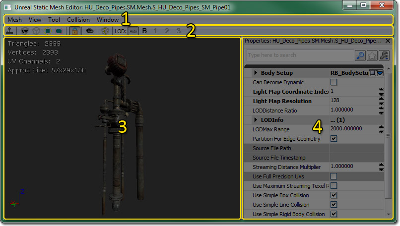
菜单栏
网格物体
- Import Mesh LOD...（导入网格物体 LOD...） - 可以打开允许您选择要导入作为特定 LOD 的 LOD 网格物体的文件对话框。
- Remove an LOD...（移除 LOD...） - 移除特定 LOD 的 LOD 网格物体。
- Generate LOD...（生成 LOD...） - 使用递减算法为特定 LOD 生成一个新的 LOD 网格物体。
- Generate Unique UVs...（生成唯一的 UV...） - 打开 Generate Unique UV（生成唯一的 UV） 面板生成一组唯一（非重叠）的贴图坐标。
- Export Light Map Mesh (.OBJ)...（导出光照贴图网格物体 (.OBJ)...） - 将静态网格物体导出为 .OBJ 用于编辑外部应用程序中少于理想光照贴图 UV。
- Import Light Map Mesh (.ASE)..（导入光照贴图网格物体 (.ASE)....） - 在外部应用程序中编辑完成它的 UV 后以 .ASE 格式导入静态网格物体。
- Change Mesh（更改网格物体） - 将静态网格物体编辑器中加载的静态网格物体资源更改为当前在内容浏览器中选择的资源。
- Fixup empty/bad elements（修补空白/坏的元素） - 需要相关描述。
视图
- Realtime（实时） - 开启视窗是实时更新还是只是在被点击/鼠标点中的时候进行更新。 默认情况下，它是关闭状态，您可能需要在网格物体加载完成后在视窗中点击，这样才能使动态加载的贴图以高分辨率显示。
- UV Overlay（UV 覆盖层） - 在预览面板中开启显示静态网格物体资源的 LightMapCoordinateIndex 属性中指定的通道的静态网格的 UV。
- Wireframe（线框） - 在带光照视图和一个线框视图之间开启预览面板的视图模式。
- Bounds（边界） - 开启显示静态网格物体的边界。
- Collision（碰撞） - 开启显示静态网格物体的简化碰撞网格物体，前提是已经分配了一个网格物体。
- Normals（法线） - 在预览面板中开始显示顶点法线。
- Normals（法线） - 在预览面板中开始显示顶点法线。
- Binormals（副法线） - 在预览面板中开启显示顶点副法线（法线和切线为正交向量）。
- Lock Camera（锁定相机） - 在允许您在编辑器中随时移动相机的试图导航和只允许你旋转静态网格物体并进行缩放的轨道模型之间切换。
工具
- Save Thumbnail Angle（保存缩略图角度） - 通过预览面板中当前相机的位置和方位保存视点作为内容浏览器中的缩略图预览。
- Fracture Tool（破裂工具） - 可以打开破裂工具通过当前静态网格物体资源创建一个新的 Fractured Static Mesh（破裂的静态网格物体）。
碰撞
- 6DOP Simplified Collision（6DOP 简化的碰撞） - 生成一个包含这个静态网格物体的按照坐标轴排列六个面组成的新盒碰撞网格物体（总共 6 个面）。
- 10DOP-X Simplified Collision（10DOP-X 简化的碰撞） - 生成一个包含这个静态网格物体的按照坐标轴排列六个面组成的新盒碰撞网格物体（总共 10 个面），其中有 4 个 X-轴对齐的边进行了倒角处理。
- 10DOP-Y Simplified Collision（10DOP-Y 简化的碰撞） - 生成一个包含这个静态网格物体的按照坐标轴排列六个面组成的新盒碰撞网格物体（总共 10 个面），其中有 4 个 Y-轴对齐的边进行了倒角处理。
- 10DOP-Z Simplified Collision（10DOP-Z 简化的碰撞） - 生成一个包含这个静态网格物体的按照坐标轴排列六个面组成的新盒碰撞网格物体（总共 10 个面），其中有 4 个 Z-轴对齐的边进行了倒角处理。
- 18DOP Simplified Collision（18DOP 简化的碰撞） - 生成一个包含这个静态网格物体的按照坐标轴排列六个面组成的新盒碰撞网格物体（总共 18 个面），其中所有的边都进行了倒角处理。
- 26DOP Simplified Collision（26DOP 简化的碰撞） - 生成一个包含这个静态网格物体的按照坐标轴排列六个面组成的新盒碰撞网格物体（总共 26 个面），其中所有的边和角都进行了倒角处理。
- Sphere Simplified Collision（球体简化的碰撞） - 生成一个包含这个静态网格物体的新球体碰撞网格物体。
- Auto Convex Collision（自动凸面碰撞） - 可以打开自动凸面碰撞工具生成一个新的凸面碰撞网格物体或网格物体。
- Remove Collision（删除碰撞） - 删除任何赋给这个静态网格物体的简化碰撞。
- Convert Boxes to Convex（将盒转换为凸面） - 可以将任何简单的盒碰撞网格物体转换为凸面碰撞网格物体。
窗口
- Properties - 开启显示属性面板。
- Mesh Simplification - 开启显示网格物体简化工具。
- Generate Unique UVs... - 可以开启显示 生成唯一的 UV 面板。
工具栏
| 可以开启视图实时进行更新还是只在被点击/鼠标点中的时候更新。 默认情况下，它是关闭状态，您可能需要在网格物体加载完成后在视窗中点击，这样才能使动态加载的贴图以高分辨率显示。 | |
| 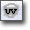 | - 在预览面板中开启显示静态网格物体资源的 LightMapCoordinateIndex 属性中指定的通道的静态网格的 UV。 |
| - 在带光照视图和一个线框视图之间开启预览面板的视图模式。 | |
| 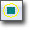 | - 开启显示静态网格物体的边界。 |
| 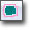 | - 开启显示静态网格物体的简化碰撞网格物体，前提是已经分配了一个网格物体。 |
 | - 在允许您在编辑器中随时移动相机的试图导航和只允许你旋转静态网格物体并进行缩放的轨道模型之间切换。 |
 | - 通过预览面板中当前相机的位置和方位保存视点作为内容浏览器中的缩略图预览。 |
 | - 可以打开破裂工具通过当前静态网格物体资源创建一个新的 Fractured Static Mesh（破裂的静态网格物体）。 |
| 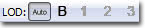 | 在预览面板中允许您查看这个静态网格物体的指定 LOD 或者允许在屏幕上根据网格物体的大小自动交换 LOD。 |
预览面板
预览面板会显示这个静态网格资源的渲染（或者可以选择使用边框）视图。它允许您在静态网格物体在游戏中进行渲染的时候检查它。这个视窗还允许您预览静态网格物体资源的边界以及它的碰撞网格物体，前提是已经分配了一个网格物体。此外，可以显示这个静态网格物体的 UV。 在预览面板上显示了一系列有关这个网格物体资源的统计数据或信息。 在这些信息中，您将会了解到以下内容：
在这些信息中，您将会了解到以下内容：
- Triangles - 会显示在这个静态网格物体中的三角形数量。
- Vertices - 会显示这个网格物体中的顶点数量。
- UV channels - UV 通道的数量。 阴影映射需要唯一非重叠 UV（请参阅阴影参考指南）。
- Approx Size - 会通过虚幻单位显示这个静态网格物体的近似大小（长度 x 宽度 x 高度），所有轴的缩放比例都是 1。
属性面板
属性面板显示了特定静态网格物体的属性。除非这些属性在地图中进行了本地覆盖，否则这些属性将会应用到所有的静态网格物体实例中。- Body Setup - Body Setup（身体设置）下方的属性都是有关物理的属性，而且只有在这个静态网格物体资源供一些物理 actor 使用时才相关。
- Always Full Anim Weight - 相关的骨架网格物体。没有作用。
- Block Non Zero Extent - 如果该项为 true，那么身体将会阻止非零粗细碰撞检查，例如， 边界盒扫描曲面玩家碰撞。
- Block Zero Extent - 如果该项为 true，身体将会阻止非零粗细碰撞检查，例如，即时碰撞武器开火。
- COMNudge - 偏移身体的重心。
- Consider For Bounds - 如果该项为 true，在计算边界的时候要将身体考虑进去。
- Enable Continuous Collision Detection - 如果该项为 true，那么只有连续进行碰撞检测才能使身体在高速移动的过程中不会穿过几何体。
- Fixed - 如果该项为 true，将不会为身体计算动态仿真。它在世界中将是固定的。
- Mass Scale - 根据身体的体积计算默认质量的乘数。
- No Collision - 如果该项为 true，那么将会对身体禁用碰撞。
- Phys Material - 设置物理材质用于身体。
- Pre Cached Phys Scale - 这个身体的预缓存物理数据的标度数列。
- Sleep Family - 为身体设置休眠系列。用于确定应该将身体设置为休眠状态的时间和所处情况。
- Can Become Dynamic - 如果该项为 true，那么这个网格物体可以在被射中的时候变为动态的，否则提供一个冲力。 请参阅交互式静态网格物体。
- Light Map CoordinateIndex - 可以确定计算阴影贴图和光照贴图所应用的 UV。 阴影贴图需要唯一的、不重叠的、没有平铺显示的 UV。 因为这不总是为物体设置纹理最有效的选项，所以阴影贴图可以用一组独立的 UV。 要了解有关阴影贴图的更多信息，请参阅阴影参考指南。
- Light Map Resolution - 可以确定阴影贴图的分辨率。 Type(类型)仅是所需要的阴影贴图的一个维度（如果您想要一个 256x256 的阴影贴图，请输入“256”）。 没有输入值(默认)意味着不会创建阴影贴图（仅使用顶点阴影）。 此外，阴影参考指南中包含更多相关信息。
- LOD Distance Ratio - 可以调整发生 LOD 变换的距离的乘数。
- LOD Info - 这个静态网格物体资源的 LOD 的数列。每个 LOD 都有一个元素列表，相应地每个列表都有一个材质插槽的数列。每个材质插槽中包含以下内容：
- Enable Per Poly Collision - 如果该项为 true，那么将会对于这个材质插槽相关的几何体使用多边形级碰撞。
- Enable Shadow Casting - 如果该项为 true，那么与这个材质插槽相关的几何体将会使用 StaticMeshActor 的全局阴影投射设置。否则，几何体将不会投射阴影。
- Material - 要供与这个材质插槽相关的几何体使用的材质。
- LODMax Range - 与应该发生最终 LOD 变换的相机之间的距离。每个 LODMax 范围发生的变换/LOD 数量单位。
- Streaming Distance Multiplier - 可以调整使用 UV 0. 1.0 作为默认值的动态加载贴图的分辨率；值越高动态载入的分辨率越高。
- Use Full Precision UVs - 为了节省内存，默认情况下静态网格物体使用半精度的UV（16 位）。 启用这个选项将强制网格物体使用全精度（32 位）UV。 当贴图映射到网格物体出现失真时，这个选项可能是需要的。
- Use Maximum Streaming texel Ratio - 如果该项为 true，那么这个网格物体将会使用一个不太保守的计算 mip LOD 贴图系数的方法。在将其应用在保存上面的时候需要重新保存软件包。
- Use Simple Box Collision - Use Simple Box Collision（使用简单的盒碰撞） 字段包含大量文档。请参阅碰撞参考指南获取可以使用的参考信息。要获得关于静态网格物体碰撞的总体指南，请参考静态网格物体碰撞参考文档。
- Use Simple Line Collision - Use Simple Line Collision（使用简单的线碰撞） 字段包含大量文档。请参阅碰撞参考指南获取可以使用的参考信息。要获得关于静态网格物体碰撞的总体指南，请参考静态网格物体碰撞参考文档。
- Use Simple Rigid Body Collision - Use Simple Rigid Body Collision（使用简单的刚体碰撞） 字段包含大量文档。请参阅碰撞参考指南获取可以使用的参考信息。要获得关于静态网格物体碰撞的总体指南，请参考静态网格物体碰撞参考文档。
- Used For Instancing - 如果该项为 true，那么将会使用这个网格物体进行实例化。
控制
鼠标控制
预览面本- LMB + Drag - 如果相机被锁定，那么绕 Z 轴旋转这个网格物体并将其移向或原理原点。否则，围绕它的 Z 轴旋转相机并沿着它的本地 X-轴移动相机。
- RMB + Drag - 如果相机被多顶，那么旋转这个网格物体。否则，旋转相机。
- LMB + RMB + Drag - 如果相机没有被锁定，那么沿着它的本地 YZ-平面移动相机。
键盘控件
- Ctrl + R - 在预览面板中开启实时显示。
- L + Mouse Move - 在预览面板中旋转预览光源。
LOD(细节层次)
查看 LOD(细节层次)
在静态网格物体查看器的工具栏上有一些按钮，它们允许您查看网格物体在不同 LOD 层次下的样子：  | 根据网格物体在屏幕上的尺寸，自动选择要使用的 LOD 层次。这允许您预览网格物体在游戏中的样子。 |
 | 强制使用‘基础’网格物体显示（也就是 LOD0）。 |
| 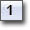 | 强制显示器使用 LOD 1。除非已经导入该 LOD 的 LOD 网格物体，否则将会禁用这个选项。 |
 | 强制显示器使用 LOD 2。除非已经导入该 LOD 的 LOD 网格物体，否则将会禁用这个选项。 |
| 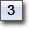 | 强制显示器使用 LOD 3。除非已经导入该 LOD 的 LOD 网格物体，否则将会禁用这个选项。 |
导入一个 LOD
首先，在静态网格物体编辑器中打开您要添加 LOD 的静态网格物体。然后在‘Mesh（网格物体）’菜单下选择‘Import Mesh LOD（导入网格物体 LOD）...’菜单项。将会要求您指定包含较低细节的网格物体版本的 ASE 文件。一旦您选中了要导入的 .ASE 文件，将会弹出一个组合框，允许您选择导入这个网格物体要作为的 LOD 层次。LOD0 是“基础”网格物体，或多边形数量最高的网格物体。LOD1 是第一个逐步降低的 LOD 层次，以此类推。在已存在的 LOD 上导入网格物体，将会替换现有的 LOD 网格物体。 如果您导入成功，并且没有产生任何错误，那么您可以按下任何在工具条上合适的‘Force LOD（强制 LOD）’按钮来查看您的网格物体是否进行了正确的导入。 您可以通过‘Mesh（网格物体）’菜单下的‘Remove an LOD（移除 LOD）’来移除任何导入的 LOD 层次。配置 LOD
DisplayFactor(显示因数)是基于出现在屏幕上的物体包围球的大小的。1.0 预示着它将在一个方向完全地充满屏幕。在分割屏幕中，任何视口都将使用最大的 DistanceFactor（距离因数）。 LODInfo(LOD信息)包含了这个静态网格物体的一系列 LOD。对于每个 LOD，您将会找到以下属性：| Materials(材质) | LOD 所使用的一系列材质。LOD 可以使用不同的材质。另外，LOD 实例化可以为每个实例 LOD 材质覆盖这个设置。 |
生成 LOD
您可以从基础 LOD 来生成 LOD 从而快速地获得简化的几何体。 为了产生一个新的 LOD，选择 Mesh（网格物体）->Generate LOD（生成 LOD）。 接下来选择您想覆盖的 LOD（如果可使用的最高 LOD 值存在，将允许您添加一个新的 LOD），并输入一个目标面数量。 修饰符将会将会尽量使网格物体降低为这个目标，但是最终的面数量可能不是精确的。 为较大的网格物体生成 LOD 可能要占用几分钟的时间。UV
生成 UV
静态网格物体编辑器包含一个内置工具用于为您的网格物体 LOD 展开唯一的 UV 。 也就是，它将会创建 UV 坐标，以便网格物体表面的每个点映射到 UV 贴图的唯一的一个点上。 您可以在 Mesh（网格物体）菜单下找到 *Generate Unique UV(生成唯一的 UV）... * 菜单项。 这将会弹出一个窗口允许您配置展开选项，并把改变应用到您的网格物体上。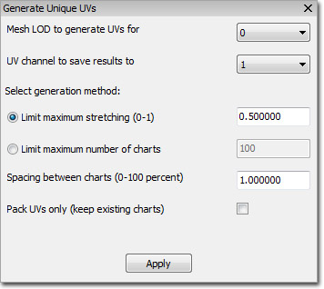
首先，选择 网格物体 LOD 数值 * 和 *UV 通道 用于保存结果。 当您产生用于光照贴图的 UV 时，通常设置 UV 通道为 1。 接下来的设置是非常重要的。 这是您配置您的模型如何展开为“charts（图表）”及如何把您的模型映射到您的坐标空间中的地方。 这里有两个操作模型，您可以选择它们其中的一个：| Limit maximum stretching(限制最大的伸展量) | 尝试阻止把像素不均衡地拉伸到网格物体的表面区域。 您可以提供一个在 0.0 到 1.0 间的值来设置“拉伸限制”，或者您许可的拉伸量。 较低的值允许较小的拉伸量，这对于钢体模型是合适的，比如建筑组成块。然而较高的值允许更大的拉伸量，一般对于有机模型更合适。 在任何情况下，较低的值通常将会导致更多数量的分割图表及更多的 UV 接缝。 |
|---|---|
| Limit maximum number of charts(图表数量的最大限制) | 通过限制创建图表的总数来保持 UV 接缝的数量为一个最低值。 开始时设置这项为一个非常低的值。 如果 UV 产生过程失败，那么简单地意味着算法不能在这个低图表数量下展开模型。 然后逐步使用较大的值直到您获得了可以接受的结果。 注意，如果您在这里使用了一个较大的值，通常算法将总是使用最大数量的图表！ 这通常会导致很多 UV 接缝，所以请尽量保持这个数为一个较低的值。 |
查看 UV
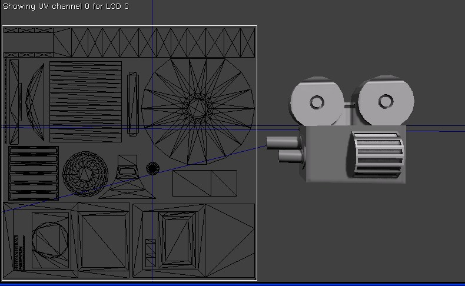
您可以通过点击工具条图表或者从 View(视图)菜单中选择 UV Overlay(UV 覆盖图)来查看 UV 覆盖图。 将会在当前的 LOD 上显示通过 LightMapCoordinateIndex(光照贴图坐标索引)所指定的 UV 通道。 贴图空间的原点是左上角的位置。为 3DMax UV 编辑设计的光照贴图导入/导出通道
概述 考虑到在虚幻引擎中的静态网格物体有一些非最佳光照贴图 UV 布局要在 3D Max 中进行编辑，我们添加了光照贴图导入/导出通道。 工作流程如下所示: 把静态网格物体从虚幻引擎编辑器中导出到 .OBJ 文件，- 将 .OBJ 文件导入到 3D MAX 内
- 在 3D MAX 中修复 UV
- 将 3D MAX 中的文件导出为 .ASE 文件
- 将 .ASE 文件导回到虚幻引擎中并和原始的模型相融合
 或者
b. 内容浏览器
在内容浏览器中，选择所有要导出的静态网格物体。
或者
b. 内容浏览器
在内容浏览器中，选择所有要导出的静态网格物体。右击这些网格物体其中的任何一个，并选择“Export Light Map Meshes (.OBJ)（导出光照贴图网格物体(.OBJ)）...”
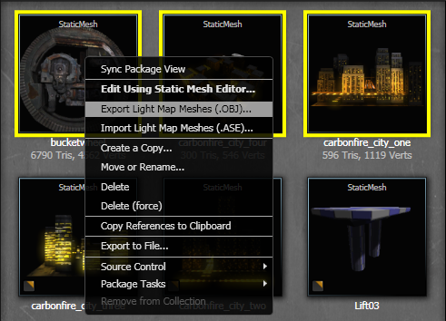
2) 选择一个目录 导航到您想将光照贴图网格物体导出到的目录。 注意 ： 这些网格物体将会在其文件名的尾部附加 " _UVs_LOD_#"。 3) 导入到 3D MAX 中
从主菜单中选择 File（文件）-->Import（导入）
3) 导入到 3D MAX 中
从主菜单中选择 File（文件）-->Import（导入）
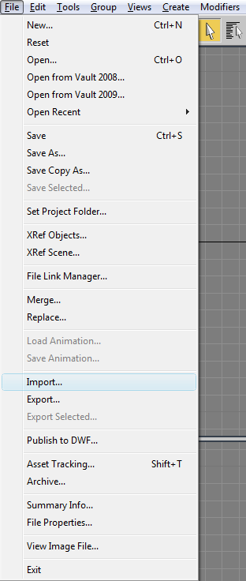
将过滤器设置为 *.OBJ导航到导出目录
选择您想修改的文件
 如果贴图坐标默认情况下没有打开，请确认选择它是否被选中
如果贴图坐标默认情况下没有打开，请确认选择它是否被选中
 4) 改变 UV
在 Unwrap UVW 修改器中编辑 Uv
4) 改变 UV
在 Unwrap UVW 修改器中编辑 Uv
 5) 从 3D Max 中导出
从主菜单中选择 File（文件）-->Export（导出）
5) 从 3D Max 中导出
从主菜单中选择 File（文件）-->Export（导出）
 将过滤器设置为 *.ASE
将过滤器设置为 *.ASE导航到导出目录
设置导出文件的名称 注意 ： 请一定要保存和导入的 .OBJ 文件具有 同样名称 的 .ASE 文件（除了扩展名和目录以外）。 因为这个工具用于批量的导出/导入，命名规则用于在导出时使模型和 LOD 成对匹配。
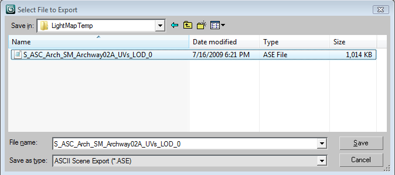
请确保选中了 Mapping Coordinates（贴图坐标） 6) 导回到虚幻引擎中
和从虚幻引擎导出类似，有两种方式为静态网格物体导入光照贴图信息：
a) 静态网格物体编辑器
从主菜单中选择 Mesh（网格物体）-->“Import Light Map Mesh (.ASE)（导入光照贴图网格物体(.ASE)）...”
6) 导回到虚幻引擎中
和从虚幻引擎导出类似，有两种方式为静态网格物体导入光照贴图信息：
a) 静态网格物体编辑器
从主菜单中选择 Mesh（网格物体）-->“Import Light Map Mesh (.ASE)（导入光照贴图网格物体(.ASE)）...”
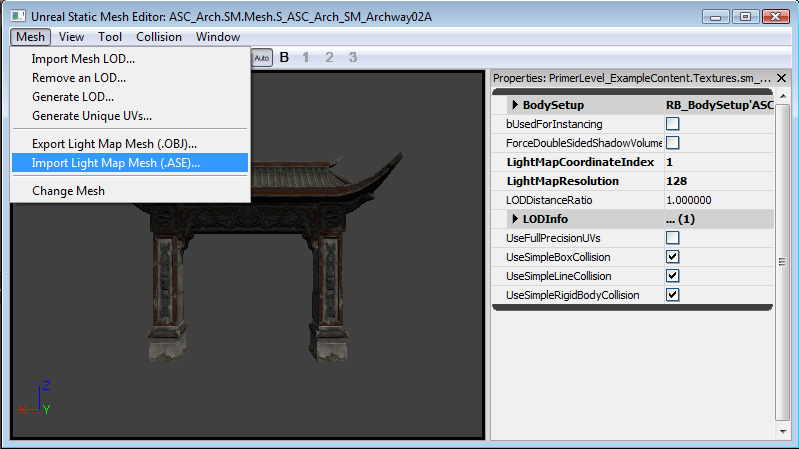
或者 b) 内容浏览器 在内容浏览器中，选择所有要导入的静态网格物体。右击这些网格物体中的任何一个，并选择"Import Light Map Meshes (.ASE)(导出光照贴图网格物体(.ASE))..."
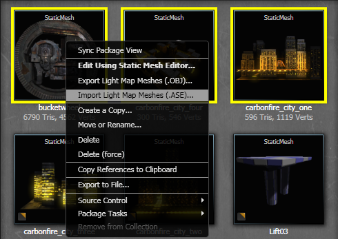
7) 选择一个目录 导航到您要导入光照贴图网格物体的目录。 注意 ： 将会在这些要导入光照贴图网格物体文件名后面附加一个_UVs_LOD_#，从而确保文件名称可以像在步骤 5 中所指定的那样匹配。
8) 调试
注意： 如果发生错误，请您查看日志窗口。 最常见的错误是 .ASE 文件丢失、导出/导入数据不匹配、从 3D MAX 导出时的设置错误。
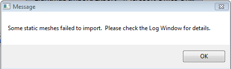
从日志窗口中的输出实例：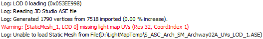
破碎的静态网格物体
- 在静态网格物体浏览器中打开一个网格物体。
- 从 Tools（工具） 菜单中选择 Fracture Tool（破裂工具） 菜单项。
- 这将会打开一个对话框，它具有让您计算网格物体断裂数的功能。这个选项让您选择网格物体将会破碎为多少块，以及允许您标识每个独立的块是否可以进行破坏。块的形状值缩放创建的块所沿着的平面，及修改点只是用于将噪声添加到破碎平面。
- 只要您使用预计算破碎分割了网格物体，您可以使用显示模式和滑块来查看破碎物。
- 分割后，将会创建一个新的物体。这个物体可以作为一个 FracturedStaticMesh（破碎的静态网格物体0放置，当射击这个物体，将会导致素有相关的块基于这个破碎平面的平均法线抛出（请确保破碎的块没有尝试返回到基础网格物体）。